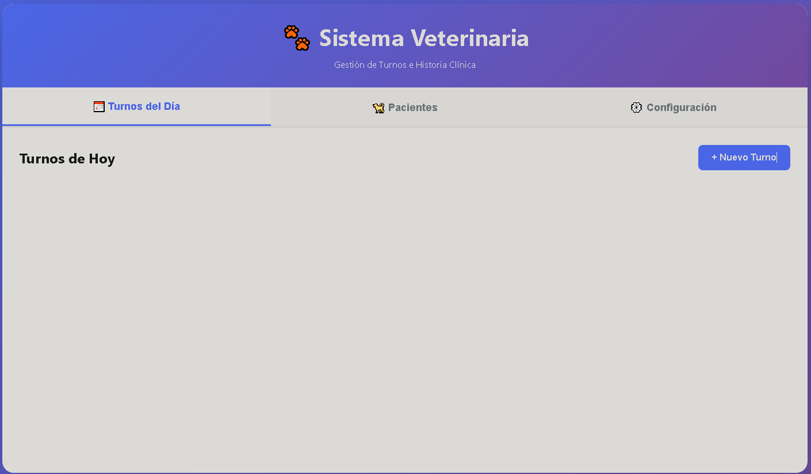
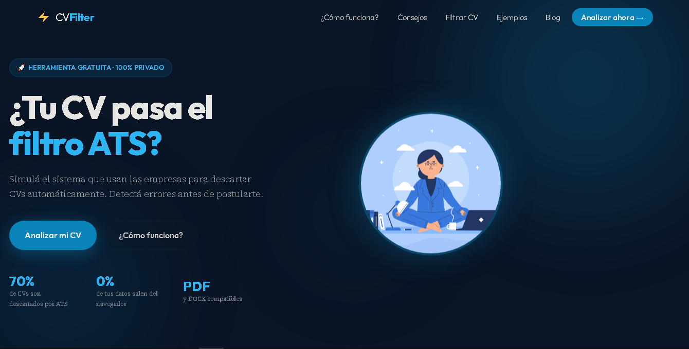
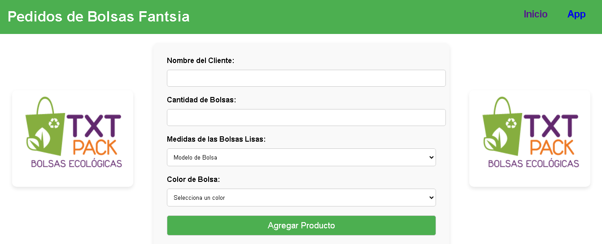
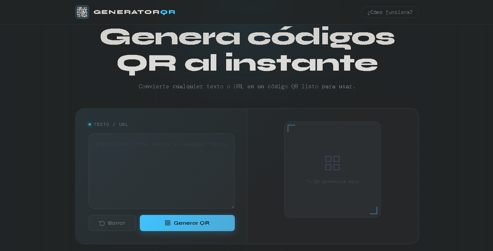
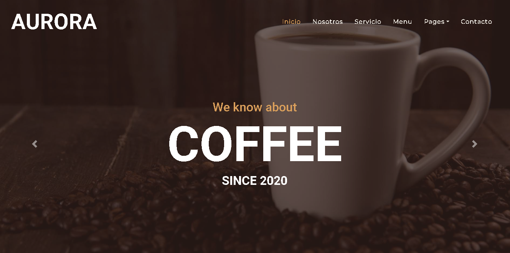
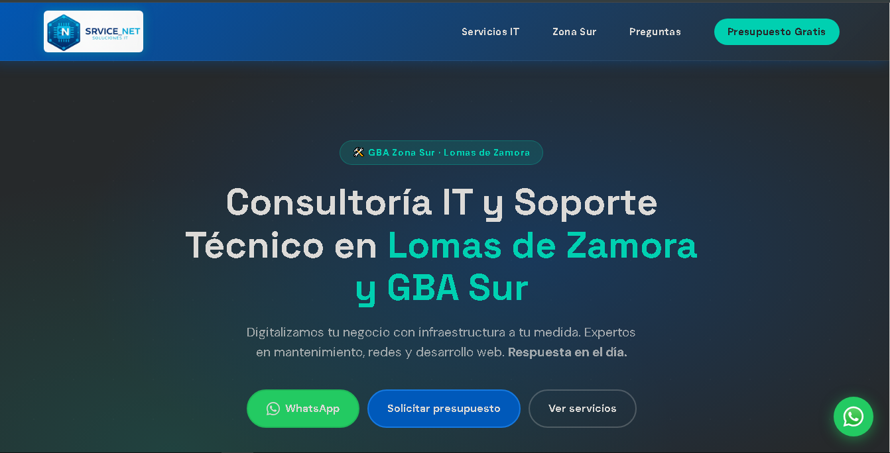
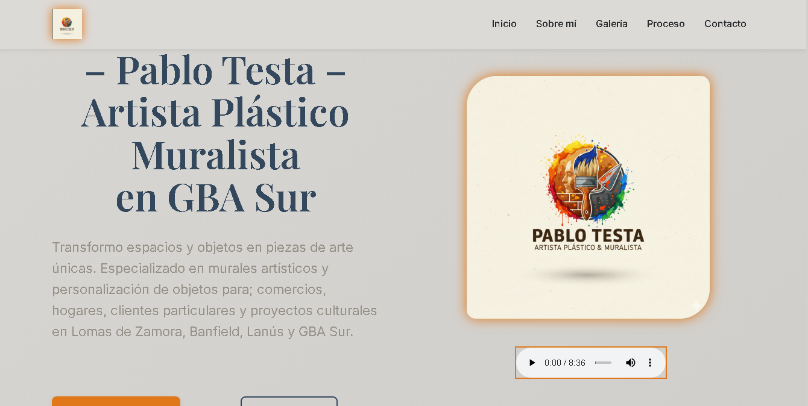

Inmobiliarias Zona sur GBA
Portal inmobiliario estático para la zona sur del Gran Buenos Aires, con foco en SEO, seguridad y escalabilidad sin backend.
Detalles ↗✦ Disponible para Propuestas
Soy Desarrollador Front-End Junior y Técnico Informático, con experiencia en el desarrollo de interfaces web funcionales, claras y orientadas al usuario, utilizando HTML, CSS, JavaScript y React.
He trabajado de manera independiente desarrollando sitios web, landing pages y aplicaciones web, integrando formularios, flujos de datos y automatizaciones. Uso Python y Flask para lógica de backend y creación de APIs.
Soy Técnico Informático con más de 4 años de experiencia en soporte, reparación y mantenimiento de equipos presencial y remoto.
Busco integrarme a un equipo donde pueda crecer como desarrollador front-end y seguir evolucionando profesionalmente.
Universidad Nacional de Avellaneda (UNDAV)
Formación en sistemas, algoritmos, redes y desarrollo de software.
Codo a Codo
Diseño de interfaces y prototipos interactivos orientados a desarrollo web.
Codo a Codo
Testing manual, reporte y seguimiento de bugs, gestión de incidencias con Jira.
Codo a Codo
Desarrollo web backend con Python, framework Django y despliegue de aplicaciones.
Google Activate
Fundamentos de desarrollo mobile, diseño de experiencia de usuario y publicación de aplicaciones.
Experiencia práctica con cartera de clientes propia, presencial y remota
Soporte y reparación de equipos, configuración de redes, diagnóstico de hardware y software.
Instituto CEA
Formación técnica en HTML, CSS, JavaScript y Python para distintos niveles académicos. Diseño de materiales didácticos y acompañamiento a estudiantes para su inserción laboral en el sector IT.
Independiente
Soporte remoto y presencial, mantenimiento y reparación de hardware y software para clientes particulares y empresas. Resolución de incidencias críticas garantizando continuidad operativa.
TXT Transporte y Logística
Optimización de procesos operativos con Excel, logrando una reducción del 30% en errores de stock. Redacción de informes técnicos y coordinación de flujos de trabajo entre administración y despacho.
Portal inmobiliario estático para la zona sur del Gran Buenos Aires, con foco en SEO, seguridad y escalabilidad sin backend.
Detalles ↗





